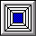

Developing a picture hierarchy
A process application normally has a number of linked pictures, such as plant overview, process monitoring, system status, alarm summary, and trend pictures. There may also be pop-up windows for things like operator messages and help. Therefore, in addition to creating individual pictures, you will need to develop a system for linking pictures so that operators can easily get to the one they need.
The DeltaV system starts you off with an Overview picture that you can tailor to fit your application. Generally, the Overview is used as the top level in the hierarchy. You can add pushbuttons to the Overview that let you link to other pictures. You can even use a photograph or drawing with hotspots (rather than pushbuttons) that link your Overview to other pictures.
The design of your Overview picture is limited only by your imagination. Here is an example:

The Overview picture has initial text explaining how to rename the Overview picture by editing the file UserSettings (or User_Ref) in the Standard folder in the system tree. This file is for advanced users who want to rename the Overview, set up the Display History List with a predefined list of pictures, modify or add global variables, and do other tasks that define the operator's startup environment. It is beyond the scope of this introductory manual to go into this in detail. To learn more about the UserSettings file and global variables, refer to Books Online.